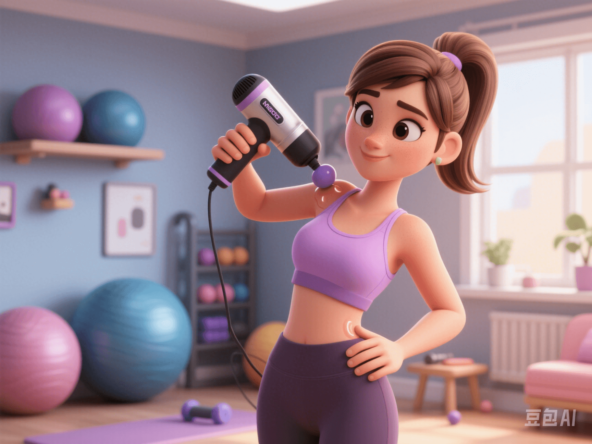

Scientific Usage of Foam Gun: Make Relaxation More Effective!
PeaceLove.Top Insights :2025-04-12
Introduction
The foam gun, a popular recovery tool in recent years, helps us relieve muscle tension, relax fascia, and promote blood circulation. However, many people may not know that the correct usage can double the effectiveness. Next, we'll introduce the scientific usage skills of the foam gun to let you enjoy the most effective relaxation experience!
🧠 Principle of the Foam Gun: Why Is It Effective?
The foam gun acts on muscles and fascia through high - frequency vibration and deep - layer impact, helping to release tense muscles, increase blood flow, and reduce soreness caused by exercise or long - term sitting. Its working mechanism is to stimulate nerve endings and muscle fibers to promote muscle relaxation and recovery.
⏳ Scientific Usage Method: How to Control Each Part?
1️⃣ Use Each Part for No More Than 2 Minutes ⏱️
Research shows that the relaxation time for each muscle part should not exceed 2 minutes. Prolonged continuous use may over - stimulate the muscles, making them more tense. Using it in moderation can achieve the best results.
2️⃣ Maintain Appropriate Pressure 💥
The pressure setting of the foam gun needs to be controlled within **<70% of the pain tolerance level, avoiding excessive force. Excessive pressure may cause tissue damage** and even unnecessary harm to the skin and fascia. 💡 The ideal usage method is gentle and continuous vibration to help the muscles gradually relax.
🛠️ Operating Skills of the Foam Gun
1️⃣ Choose the Right Head Attachment
The foam gun usually comes with different head attachments. Choose according to the muscle conditions of different parts:
- ⚫ Ball - shaped head: Suitable for large - scale muscle groups, such as the back and thighs.
- 🔶 Pointed head: Used for deeper muscle relaxation, such as the shoulders and soles of the feet.
- 🔵 Flat head: Suitable for small - area regions such as the shoulders and neck.
2️⃣ Start with Large Muscle Groups
It is recommended to start with large muscle groups (such as the thighs and back) and avoid using the foam gun for deep - layer massage on small muscle groups at the beginning. Large - muscle - group muscles can better adapt to stronger impacts, helping you warm up and relax better.
3️⃣ Gently Press and Move Slowly
Don't let the contact point of the foam gun with the body stay in one place for too long. Gently press and move the foam gun slowly. The massage time for each part is recommended to be between 1 - 2 minutes. Don't stay in the same part for a long time to avoid over - stimulation.
❌ Common Mistakes: Avoid These Problems
1️⃣ Overuse
Using the foam gun for a long time and with great force will cause damage to muscles and tissues, failing to achieve the relaxation effect. Remember: less but more frequent use is the key! 🔥
2️⃣ Over - reliance
The foam gun cannot replace traditional stretching and exercise. It is only a part of recovery. Use the foam gun in moderation and combine it with appropriate warm - up and stretching to achieve more comprehensive recovery for the body.
3️⃣ Ignoring Pain Signals
If you feel severe pain during use, stop immediately. The goal of the foam gun is to relax and soothe, not to intensify pain. If you feel uncomfortable, it may indicate excessive force or improper use.
💡 Conclusion: Use Scientifically to Make the Foam Gun More Effective
In general, using the foam gun scientifically can help relieve muscle tension, accelerate the recovery process, and let you regain vitality faster! 💪 Remember to use each part for no more than 2 minutes, control the pressure below 70%, keep gentle and slow during operation, and avoid harm caused by improper use. Through reasonable use, the foam gun can be a good helper after your fitness and sports, allowing you to enjoy every body - relaxation experience! 🌟
Start to relax your body by using the foam gun scientifically!